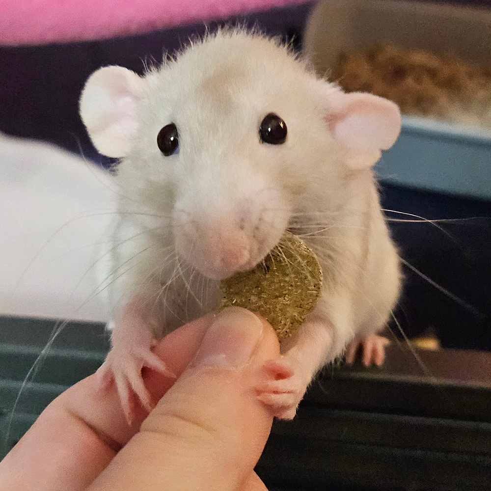
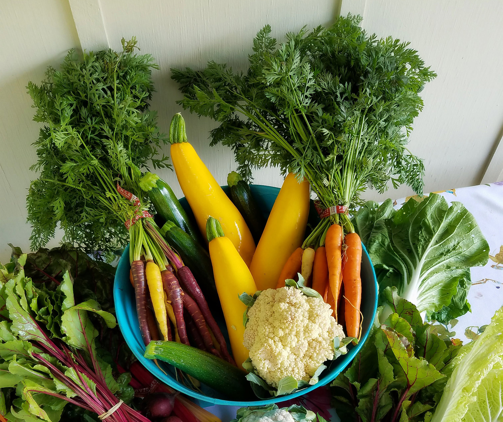
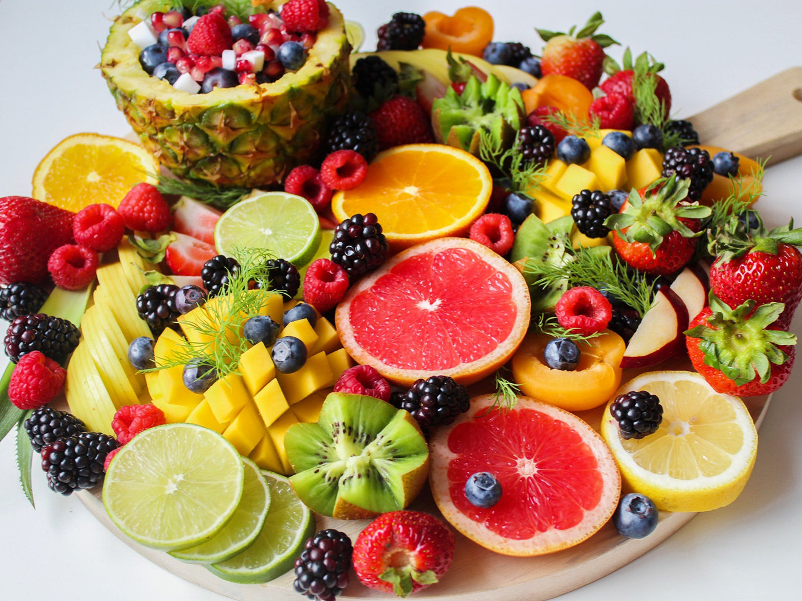

Safe Foods for Rats

Rats can eat a wide variety of foods, but not every food is good or safe for rats. Some foods need to be cooked first, some foods they can only eat a certain part of, and some (though safe) are too high in starches or sugar to be part of a rats everyday diet. Rat's aren't capable of throwing up, so it's paramount that you check multiple sources before giving anything to your rats.
In general, a rats diet should consist mainly of a high quality pellet. It should contain no more than 25% percent protein (anywhere from 14% to 18% is ideal), and contain less than 8% fat. Fresh fruits and vegetables should make up around 10% to 20% of your rats daily food intake. Below I've compiled some common safe foods for rats paired with descriptions of their benefits or risks, and how often they should be fed.
Some rules of thumb when it comes to fresh foods:
- Fruits and vegetables are usually heavily contaminated with pesticides and should (preferably) be soaked in a mixture of water and baking soda, or thoroughly washed under running water for at least a minute.
- Most vegetables and fruits are high in water or sugar can cause diarrhea if rats eat too much.
- Many herbs are toxic for rats, so you need to be aware of which ones are safe before offering them.
Vegetables

Image by Solare Flares from Pexels.
Most vegetables are low in calories and fat, and are high in vitamins, minerals, fiber, and antioxidants. Leafy, dark green vegetables should make up the bulk of the fresh food you feed your rats, followed by other vegetables.
| Vegetable | How Often to Feed | Nutrients |
|---|---|---|
| Broccoli | Daily, in small amounts. Large amounts can cause bloating. | Vitamin C, vitamin K1, Potassium, Manganese, Iron, Folate, antioxidants, and fiber. |
| Carrot | A few times a week in small amounts. High in sugar. | Vitamin A, vitamin K, Biotin, Potassium, and fiber. |
| Cauliflower | Daily in small amounts. Large amounts can cause bloating. | Vitamin C, vitamin K, vitamin B6, Choline, Folate, Potassium, Magnesium, Phosphorus, and antioxidants. |
| Cucumber | Rarely as a treat. High water content, little nutritional value. | Vitamin A, vitamin K, vitamin C, Potassium, Phosphorus, and Manganese. |
| Kale | Daily in large amounts. Rich in nutrients, considered a super food. | Vitamin A, vitamin K, vitamin C, B vitamins, Manganese, Copper, Calcium, Potassium, Iron, Phosphorus, and antioxidants. |
| Peas | Daily. Put in a bowl of water for enrichment. | Protein, fiber, vitamin A, vitamin C. |
| Spinach | Once a week in small amounts. Large amounts can cause kidney/bladder stones or a UTI. | Vitamin A, vitamin C, vitamin K1, Folic Acid, Calcium, and Iron. |
Fruits

Image by Jane Doan from Pexels.
Most fruits should be fed in moderation as treats because they are high in sugars, but are part of a balanced diet for rats. Always remove fruit seeds, most of them are toxic and the few that aren't contain no nutrients and can present a chocking hazard.
| Fruit | How Often to Feed | Nutrients |
|---|---|---|
| Apple | Occasionally as a treat. Very high in sugar. | Vitamin C, Potassium, and fiber. |
| Bell Pepper | Daily. Rich in nutrients, low in sugar. | Vitamin A, vitamin C, vitamin K1, vitamin B6, vitamin E, Potassium, Folate, and antioxidants. |
| Cherry | Rarely as a treat. High in sugar. | Vitamin C, vitamin B6, Potassium, Copper, Manganese, and Magnesium. |
| Grapes | Once or twice a week in small amounts. | Vitamin C, vitamin K, vitamin B12, Copper, and Potassium. |
The Benefits of Different Nutrients
Different vitamins, minerals, and other nutrients have different benefits. It's important to give your rats a varied diet, but sometimes rats need more of a particular nutrient. For example, extra vitamin C will help a sick rat, and vitamin K can help a rat with an open wound. Below I've listed some important vitamins and minerals for rats and their benefits.
- Antioxidants
- Different antioxidants have a variety of benefits. Many provide basic support for the immune system but some can reduce the risk of cancer and chronic disease.
- Biotin
- Supports a healthy metabolism.
- Choline
- Supports brain function and can improve memory.
- Fiber
- Boosts digestive health. Supports the growth of gut bacteria.
- Potassium
- Supports the cardiac system.
- Vitamin A
- Supports eye health.
- Vitamin C
- Boosts the immune system and reduces inflammation. Promotes skin health.
- Vitamin K
- Supports wound healing and blood clotting. Promotes bone health.
Additional Resources
These are resources I referenced when researching the dietary needs of rats. If your interested in giving your rats a food I didn't mention, I recommend starting with one of these.
- Nutritional requirements with a list of unsafe foods: kb.rspca.org
- General feeding guide and nutrition requirements: pethelpful.com
- Extensive list of safe and toxic foods for rats: pethelpful.com
- Search different foods and for a detailed breakdown of nutrition, benefits, how much to feed: thepetfaq.com
- Search different foods and for a detailed breakdown of nutrition, benefits, how much to feed: petpad.net